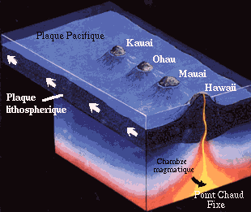
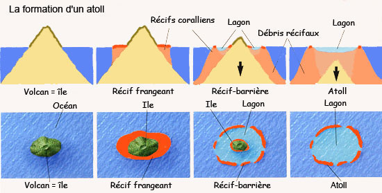
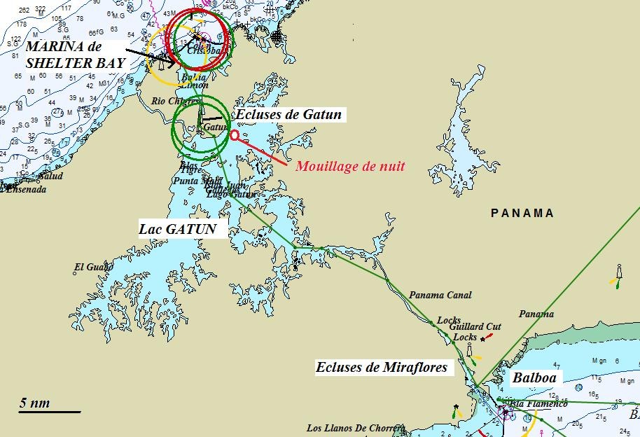

Quelles sont nos techniques de pêche? La pêche est un art difficile à maîtriser. Rares sont les marins qui divulguent leurs secrets. La couleur, la forme et la taille de l'appât, la longueur de ligne, l'influence de la phase lunaire, la température de l'eau, la vitesse du bateau, la pression atmosphérique, la taille des nuages, l'âge du capitaine et, bien évidemment, le cours du dollar sont autant de paramètres à prendre en considération. Pour ma part, je mise essentiellement sur la chance et l'obstination, tant il est vrai que mes élucubrations pseudo-scientifiques ne m'ont jamais permis de pêcher quoi que ce soit alors qu'en laissant traîner la ligne suffisamment longtemps, on finit toujours par attraper quelque chose. Depuis Panama jusqu'en Nouvelle Zélande, nous avons régulièrement réalisé de belles prises alors que d'autres, le croiriez-vous?, n'ont jamais rien ferré dans le Pacifique.
Pourquoi ne jetez-vous pas l'ancre en pleine mer? Parce qu'on la perdrait.
Peut-on donner des conseils alors qu'on n'y connaît rien? Absolument. C'est même une espèce de compétition tacite entre les navigateurs. Mis à part quelques extra-terrestres qui sont capables, à l'image de Mc Gyver, de réparer n'importe quoi, n'importe où, avec n'importe quel outil, la plupart des navigateurs sont des amateurs bienheureux qui se pavanent quand ils ont réussi à réparer un truc. Toutefois, force est de constater qu'il est déjà assez difficile de trouver un plombier compétent à Bruxelles, alors en plein milieu du Pacifique, vous imaginez ce que c'est. Inutile de préciser que la principale activité d'un marin tourdumondiste n'est pas la voile mais le bricolage.
Est-ce qu'on ne s'ennuie pas à force de ne rien faire au soleil? Non. Comme chacun sait, l'être humain n'est pas fait pour travailler, à de rares exceptions près. En conséquence, dès qu'il se retrouve à l'état normal, libéré des contraintes matérielles, il tend à redevenir lui-même. Il se ressource et retrouve sa vrai nature: la glande. Quand, de surcroît, le soleil brille dans le ciel sans embrun, l'homme redécouvre ses racines, et la femme aussi, mais un peu plus tard. C'est scientifique. Tous ceux qui sont passés par là le confirmeront: avec un peu d’entraînement, on peut très bien mettre une journée entière pour faire la vidange d'huile ou ranger le carré, sans jamais s'inquiéter. Certains arrivent même à postposer la baignade dans l'eau à 30°C pour le lendemain.
Quel est le plus bel endroit que vous avez visité? Voilà une question intéressante. Si j'ai un petit faible pour les Gambier, Cécile préfère les îles Cook. Il faut dire que les Marquises sont assez saisissantes, les Fidji magnifiques, les Tonga très sauvages, les Tuamotu offrent des variations sur le thème bleu assez spectaculaires tandis que les Galapagos sont uniques. Niue est une île fantastique et les îles de la Société ont tout: lagons et reliefs tourmentés. Mais bon, s'il faut choisir, j'opte pour la Corse car c'est quand même beaucoup plus près de chez moi.
Faut-il être un bon marin pour faire le tour du monde en bateau ? La réponse est non. Il se fait que je suis moi-même très féru en matière de voile, mais je peux vous dire que nombre de ceux que nous avons croisés, spécialement sur les catas, n'étaient que de piètres marins, certains ne connaissaient même pas la marque de leur guindeau ou le diamètre de leurs amarres. Laissez-moi rire....
Le mal de mer empêche-t-il de naviguer ? Que nenni. Sans mentir, 8 personnes sur 10 que l'on croise en sont atteintes, certains de manière presqu'aussi sévère que Cécile. Curieusement, ce mal semble affecter les catamarans plus que les monocoques, ou alors les occupants des premiers sont moins 'marins' que ceux des seconds ? Allez savoir !
Y a-t-il autour du monde des choses à découvrir que l'on ne peut voir en France ? C'est délicat, surtout si l'on y inclut la Corse et Houat. Mais bon, à part les plages de sable blanc des Roques, le canal de Panama, les iguanes des Galapagos, les lagons de Polynésie, les reliefs de Bora Bora et l'hospitalité légendaire des Marquisiens, il n'y a rien que vous ne puissiez trouver en France, sauf évidemment si vous aimez les chutes d'eau de plus de 100m, les raies mantas, les banians, les hakas et, bien entendu, les mahi-mahi. Par contre, pour ce qui est du fromage...
Les Belges sont-ils de grands voyageurs ? Peut-être, mais pas à la voile, alors. La liste des bateaux belges que nous avons croisés est courte: un 'vrai', avec notre ami Christian à bord; un 'faux vrai', battant pavillon français mais skippé par notre ami Denis, plus belge que belge, et une ribambelle de 'vrais faux', skippés par des français essayant d'échapper aux taxes hexagonales. Mais pas un seul bateau belge avec enfants...
Quel est le point commun entre les tourdumondistes et les témoins de Jeovah ? Pour les uns comme pour les autres, il est périlleux de tirer des conclusions hatives sur base de notre maigre expérience mais, dans les deux cas, on a constaté une nette propension à se déplacer en paire. C'est curieux d'ailleurs car nous-mêmes avons longtemps voyagé avec les Manuias. Ceci dit, il y a des bateaux qui se fréquentent depuis les Caraïbes jusqu'en Nouvelle Calédonie et qui, comme les dorades coryphènes, voyagent toujours en couple. Enfin, pour être honnête, en dépit de nos efforts pour trouver un peu de solitude au coin d'un motu, on finit toujours par retrouver les mêmes voiliers sur notre route... sans doute parce qu'on fait tous sensiblement le même trajet.
J'ai déjà consacré deux questions à cet épineux problème. La première, en avril 2008, était certes passionnante mais manquait un peu de concret. La deuxième, élaborée avec brio en avril 2009, pêchait par manque d'expérience. Maintenant que nous sommes partis depuis près de 15 mois et que nos enfants ont tous franchi avec succès une étape scolaire, je peux revenir vers vous avec quelques notions plus pragmatiques.
D'emblée, il me faut divulguer une mauvaise nouvelle pour les optimistes qui envisagent de prendre un long congé et qui ont des enfants en âge d'école: l'EAD (Ecole à Distance) ne peut être prise à la légère, ni par les adultes, ni par les enfants. Le matériel pédagogique est de grande qualité mais, c'est le moins que l'on puisse dire, assez volumineux. Si l'on désire assurer une scolarité sérieuse, l'école à bord est certainement la plus lourde contrainte d'un tourdumondiste. A moins d'avoir enfanté une brochette de surdoués, ne pensez pas vous en tirer en y consacrant deux heures par-ci par-là, quand il fait mauvais...surtout si vous partez pour plusieurs années avec plusieurs enfants.
Contrairement à nos pronostics, nous n'avons pas trouvé rapidement la méthode adéquate. Nous avons procédé par essais/erreurs avant de trouver ce qui nous semble désormais être une bonne formule, bien que, en toute objectivité, les paramètres sont si nombreux qu'il n'existe pas 'une' formule miracle, comme nous l'ont montré les autres bateaux que nous avons croisés et avec lesquels nous avons échangé nos expériences.
A ce sujet, il est intéressant de constater que nous n'avons pas encore croisé un seul bateau avec enfants belges à bord mais seulement les français suivant le CNED. Et, je peux vous garantir que l'EAD tient très bien la comparaison avec le CNED, tant sur le fond que sur la forme, à la grande surprise de nos prétentieux amis français.
Pour ce qui est de l'organisation de l'approvisionnement en nouvelles matières, je vous renvois à la question de mars 2009. Néanmoins, je maintiens que la procédure utilisée par l'EAD ne convient pas du tout aux tourdumondistes. Preuve en est les jours que nous avons passés à attendre des colis dans les endroits les plus improbables.
Concernant la méthode, nous étions partis avec l'idée de laisser les enfants se gérer eux-mêmes le plus possible et de les 'guider' en quelque sorte. Comme nous avons 3 enfants dans 3 classes différentes, nous nous inspirions des écoles rurales où l'instituteur fait la classe pour tous le monde. Au départ, les enfants se mettaient autour de la table du carré et Cécile passait de l'un à l'autre, au gré de leurs difficultés.
Malheureusement, nous avons constaté que cette solution présentait quelques défauts: les enfants (les nôtres, en tous cas) éprouvent des difficultés à rester concentrés sur leur propre matière quand ils entendent la matière exposée aux autres. Afin de leur permettre de s'isoler, nous avions aménagé des petits bureaux dans les cabines des enfants, mais, une fois seuls, ils ne sont plus d'une efficacité redoutable (et c'est tellement plus agréable de regarder la mer par le hublot plutôt que les problèmes de maths). En outre, les enfants ne sont pas toujours conscients du degré de difficulté d'un exercice et il leur arrive parfois de poursuivre longtemps dans une voie inappropriée. En d'autres termes, même si l'enfant ne le souhaite pas, l'instituteur doit régulièrement vérifier son travail et, parfois, rectifier les raisonnements suivis.
Par ailleurs, le carré étant la pièce centrale du bateau, les 3 à 4 heures de cours quotidiennes neutralisaient le bateau dans son entièreté. Finalement, nous avons aménagé l'atelier en salle de classe et le carré en salle de travail. Les enfants passent l'un après l'autre chez Cécile, dans l'atelier, pour voir la matière dans le calme absolu. Ensuite, ils montent au carré où ils font leurs exercices, sous la houlette assez lâche d'Eric, qui peut, en même temps, réparer la pompe de cale ou faire à manger.
Nous avons également renoncé à imposer un rythme trop figé. Au départ, la classe se déroulait pour tous, tous les jours, de 9 à 13h et chaque enfant était supposé progresser de manière identique en terme de quantité de matière absorbée. Mais selon la matière vue et l'enfant qui l'assimile, le temps nécessaire à Cécile pour l'apprentissage et le suivi varie grandement. En plus, le volume de matière diffère selon l'année et le sujet. Il est donc difficile de maintenir chaque enfant au même 'niveau' afin de terminer l'année simultanément. Nous avons rapidement constaté une progression assez anarchique de nos enfants, qui semblait échapper à notre contrôle.
Nous avons donc mis au point une solution flexible afin que l'on puisse à la fois assurer la réalisation du programme dans un délai raisonnable et permettre aux enfants d'évoluer à leur propre rythme. Chaque enfant doit réaliser un nombre de 'jours EAD' minimum par jour d'étude. Ensuite, selon son humeur et le temps restant, il a la possibilité d'en faire plus et, s'il prend trop d'avance, il peut même gagner des jours de congé, si, si. Au besoin, Cécile n'hésite pas à mettre 2 élèves sur 3 à la récré, afin de se concentrer sur le troisième et de consacrer le temps nécessaire à l'absorption des connaissances.
Evidemment, cela pose un petit problème de synchronisation puisque l'année passée, par exemple, Sidney a fini son année un mois avant Kenya (et qu'on lui a donc donné des exercices supplémentaires, en dehors de l'EAD). Quoi qu'il en soit, les enfants ont acquis une autodiscipline et une autonomie que l'on n'imaginait pas en partant. Et, en définitive, ils semblent suivre le programme sans trop de problèmes et sans compromettre les activités plus importantes, comme plonger de la jupe arrière de Let It Be, sauter sur le trampo ou regarder des clips de Rihanna sur le PC...
Puisque nous visitons les Tuamotu, l'occasion est belle de se demander: "Comment se fait-ce ?". En effet, comment est-il possible qu'une barrière de corail (lequel est constitué d'organismes vivants, pour rappel) puisse surgir au milieu de l'océan ? Et pourquoi, tels les crop circles que l'on trouve dans les champs de blés anglais, les barrières de corail sont-elles fermées, parfois circulaires ?
Je suppose que, comme moi, vous soupçonnez l'intervention de quelque extraterrestre farceur en mal de mystère ou, de manière plus surprenante, s'agit-il simplement d'une facétie de Dieu le père, qui avait fini son 7ème jour un peu tôt et qui s'ennuyait avant d'aller dormir. Et bien, détrompez-vous. Il y a une explication scientifique que je vais tenter d'exposer malgré mon peu de savoir en géologie.
Depuis une centaine d'années, il est admis que la croûte terrestre est composée de plaques qui flottent sur le magma constitué de lave liquide. Ces plaques bougent et se chevauchent les unes les autres en des lieux appelés 'failles', produisant des frictions qui sont à l'origine de nombreux tremblements de terre. Le long de ces failles, l'activité sismique importante a engendré un grand nombre de volcans. Toutefois, il existe aussi un autre type de volcans, issus des 'points chauds'. Ce sont des endroits où le magma en fusion perce la croute terrestre au milieu d'une plaque, produisant un volcan.

En général, le point chaud se forme au fond de l'océan et la lave éjectée s'accumule peu à peu, jusqu'à émerger et former une île. L'activité volcanique procédant par phase, au terme de l'une d'elles, le volcan cesse d'être actif et l'île ainsi constituée s'arrête de croître. Lors de la prochaine phase, la plaque ayant poursuivi sa translation, c'est un autre volcan qui naît au départ du point chaud, fixe. Ainsi, les archipels sont souvent constitués d'îles volcaniques plus ou moins alignées. Que ce soit à Hawaï ou aux Marquises, on constate bien, en effet, une 'ligne' de propagation des volcans, conformément au mouvement de la plaque sous-jacente.
Tout cela est fort bien, me direz-vous, mais quid des atolls ? Une fois, le volcan stabilisé, le corail commence à s'établir autour de l'île, pour autant que les conditions biologiques favorables soient réunies (pas trop de courant, eau chaude toute l'année et luminosité abondante). Le corail est constitué d'animaux assimilés à des méduses, vivant en symbiose avec des plantes microscopiques. Pour survivre, il doit impérativement rester à proximité de la surface.
Hélas, lorsque le volcan n'est plus alimenté en lave, son poids sur la croûte le fait sombrer, lentement mais sûrement, dans l'océan. Ce mouvement est évidemment très lent, ce qui laisse le temps au corail de se développer vers la surface au fur et à mesure que le socle volcanique s'effondre.

A terme, le volcan disparaît entièrement sous l'eau et ne reste que la barrière de corail: c'est un atoll. On notera au passage que les Gambier, situées à l'extrême Est des Tuamotu, sont les îles les plus jeunes de l'archipel et qu'en conséquence, il subsiste encore des îles volcaniques au milieu du lagon. Voilà, en quelques mots, comment la nature a mis des millions d'années à créer spécialement pour nous, navigateurs de l'extrême, un petit paradis de la glande. Dans un prochain mémo, je tenterai d'expliquer pourquoi, malgré mes suppliques, il subsiste autant de patates de corail au milieu des lagons, alors qu'ils constituent une menace évidente pour mes coques.
L'autre jour, nous dinions à Rikitea chez le médecin de l'île lorsque celui-ce nous demanda, à brûle-pourpoint: "Si vous pouviez faire un voeu et changer quelque chose concernant votre voyage, lequel feriez-vous ?"
J'avoue qu'on ne s'était pas trop posé la question mais, depuis lors, elle me taraude l'esprit, surtout quand ce dernier vagabonde durant les longues traversées en Polynésie. Sur le coup, j'ai répondu: "Faire venir les potes".
Avant le départ, je crois que notre plus grande appréhension résidait dans la perspective de passer 24 heures sur 24, à 5, dans un espace réduit comme peut l'être un bateau, même si le nôtre est assez spacieux. Il est vrai que nous avons eu quelques difficultés à trouver nos places respectives et les premières semaines furent un peu tendues. Mais après 6 mois, nous nous sommes parfaitement adaptés et nous avons tous trouvé nos propres moyens d'évasion, lorsque le besoin d'évacuer la pression se fait sentir. On se laisse des activités séparées, telle la pêche pour moi ou le bavardage à terre avec les locaux pour Cécile. Même les enfants se sont trouvés un espace de vie propre sur le bateau et ne craignent pas de s'isoler de temps en temps.
Une autre crainte, personnelle celle-là, concernait la nourriture. A Bruxelles, j'aime les plats les plus variés et je mets un point d'honneur à préparer chaque jour un repas complet pour tous. Sur ce point, la vie de tourdumondiste constitue un retour aux sources. D'une part, la cuisine du bateau est rudimentaire: 3 mini-taques au gaz (dont une ne fonctionne plus) et un mini-four qui ne dispose que de 2 positions: on/off et qui ne chauffe pas vraiment. D'autre part, bien souvent, l'approvisionnement se résume à ce que l'on trouve et la diversité n'est pas le point fort des pays que nous traversons. En général, on a vite fait le tour des curiosités locales et lorsque l'on veut trouver des ingrédients plus 'européens', c'est souvent impossible ou hors de prix.
Evidemment, le poisson cru pêché dans le lagon, cuit au jus de citron vert et arrosé de noix de coco et pulpe de pomelo, c'est délicieux. Mais après 3 semaines de poisson et noix de coco, on se surprend à rêver à un bon fromage de chèvre arrosé de Bourgogne, pour rester simple. Mais bon, dans l'ensemble, on arrive quand même à trouver de quoi se sustenter diversement, même si le porte-feuille est parfois mis à rude épreuve.
J'avais un peu peur des moyens de communications déficients mais il faut reconnaître que même à l'autre bout de la terre, tous le monde a un GSM et Internet est souvent disponible. Même si la bande passante internet est souvent étroite, on se débrouille quand même pour rester en contact, au travers des mails et du site. Et puis, on se passe relativement bien de téléphone, télévision et autres Internet 24 heures sur 24, même si quelquefois, on est content d'apprendre ce qui se passe dans le monde.
Alors que reste-t-il que nous ayons laissé à Bruxelles, à part le froid, la pluie et le boulot qui, curieusement, ne nous manquent pas beaucoup? Les potes. Il est vrai que l'on fait beaucoup de rencontres et que certaines sont très enrichissantes mais force est d'admettre que nos relations avec l'extérieur sont placées sont le sceau du court terme. Comme le disait l'un de vous lors de notre départ: "L'heure des rencontres est aussi celle des adieux". Alors, parfois, je me souviens avec nostalgie des potes et de nos discussions dont la vacuité n'a d'égale que la décadence.
Quant à Cécile, mes potes ne lui manquent pas beaucoup (elle assume mieux la rupture, en tous cas). Ce qui lui manque, durant ce voyage, c'est le temps. Occupée aux tâches ménagères (c'est fou ce que le bateau peut se salir rapidement) ainsi qu'à l'éducation scolaire des enfants, il ne lui reste que peu de temps pour profiter pleinement des escales. C'est l'une des raisons pour laquelle nous tentons désormais de rester longtemps au même endroit.
Lorsque vous désirez vous rendre d'un point A à un point B en voilier, la meilleure route est celle qui optimise une combinaison de critères, au nombre de 4: la sécurité, la durée, le confort et l'argent (pour le fuel et l'usure des moteurs). Ces 4 critères auxquels vous accordez une importance relative qui vous est propre, vont déterminer la route à suivre, selon une stratégie qui tient parfois plus de l'art divinatoire que de la démarche scientifique.
Optimiser la sécurité consiste prioritairement à éviter les mauvaises conditions météorologiques. Pour nous, c'est le critère principal: s'il y a un risque de gros temps sur ma route, j'essaierai de contourner cet écueil avant toute autre considération. Il va de soi qu'on essaie également d'éviter les dangers tels que la présence de haut-fonds, de pirates ou de tout autre danger de ce type.
La durée de navigation (étant donnés les points de départ et d'arrivée) est avant tout une question de vent. La première règle concernant le vent est qu'il existe deux secteurs interdits: vent debout et vent plein arrière. En gros, pour notre catamaran qui ne dispose pas de dérives, nous ne pouvons pas remonter le vent à plus de 60°. Cela signifie que si le vent souffle de secteur sud, par exemple, nous ne pouvons faire mieux qu'aller soit vers ESE ou WSW. En conséquence, si notre destination est au sud, on doit tirer des bords, c'est-à-dire zigzaguer: ESE puis WSW puis ESE, etc jusqu'à destination, ce qui peut se révéler fort long. En clair, à condition d'y être obligés et que cela ne requiert pas trop de carburant (critère n°4), nous faisons les traversées contre le vent au moteur.
Outre cette limite, il existe aussi d'autres considérations à prendre en compte pour la navigation. Il convient en effet d'avoir une idée des 'polaires' du bateau. Lorsqu'on a le choix (ce qui est rare sur les courtes distances), on préférera les allures au travers ou léger portant car elles sont plus rapides.
Pour planifier une traversée, nous disposons de champs de vent. Ce sont des cartes qui donnent la direction et la force du vent pour les prochaines heures sur un secteur donné. On essaie donc de trouver dans le secteur une trajectoire qui n'aille pas contre le vent et, si possible, assure des allures légèrement portantes (mais pas de trop car cela rend la navigation inconfortable, sauf si l'on a un spi et que le vent n'est pas trop soutenu). Pour les traversées de plusieurs jours, les variations de force et de direction du vent dans le temps et l'espace compliquent considérablement les calculs (d'ailleurs, durant les courses au large, les skippers professionnels utilisent des logiciels sophistiqués pour calculer les meilleures trajectoires).
Enfin, il est intéressant de prendre en compte la dérive résultant de la combinaison du courant et de l'allure.
Pour ce qui est du confort, les choses sont simples: moins il y a de vagues et moins il y a de vent et mieux on se porte, ce qui n'est guère compatible avec le critère durée. Toutefois, l'allure grand largue est certainement le meilleur compromis puisqu'on va avec le vent et, généralement, avec les vagues.
Lorsque nous sommes descendus vers les Galapagos, le vent venait de secteur sud. Nous ne pouvions pas le remonter car l'angle à prendre nous aurait mené trop loin de notre destination. Nous avons donc opté pour le moteur qui permet la remontée face au vent. La question se posait ensuite de savoir quand nous devions bifurquer vers l'ouest. Théoriquement avec un vent de sud, on devait pouvoir suivre un cap de 240°. Donc, un rapide calcul nous permettait de savoir quand prendre ce cap. Cependant, nous savions aussi que le vent s'inclinerait vers l'est au fur et à mesure qu'on irait vers l'ouest, ce qui nous permettrait, en restant au près, d'infléchir notre trajectoire vers le sud.
En d'autres termes, on pouvait décrocher plus tôt de la trajectoire plein sud pour viser un point virtuel au-dessus des Galapagos et incurver ensuite notre trajectoire. C'est précisément ce qu'on a fait.
Pour la transpacifique, le problème est plus amusant. Le vent est de secteur ESE pendant les 2 premiers tiers. Ensuite il tend à s'orienter à l'est.
Il n'est pas improbable qu'il y ait une dépression à proximité des Gambier, ce qui signifie des périodes de vent puissant (25/30 noeuds) alternant avec des périodes de vent nul.
En théorie, on peut partir des Galapagos et suivre une route en ligne droite jusqu'aux Gambier mais cela signifie des allures portantes au milieu de l'itinéraire.
Nous avons décidé de rester un peu au nord, faisant une route au cap 250 (presque plein ouest) et d'incurver notre trajectoire vers le sud dans le troisième tiers de la traversée quand les vents seront de secteur est. De la sorte, nous profitons de la première partie de la traversée pour faire un travers agréable et rapide puis nous allons tourner avec le vent, en restant au travers le plus longtemps possible. Encore faut-il que le vent tourne effectivement au secteur Est et pas trop tard, sinon, compte tenu du courant équatorial de 1 noeud, nous n'atteindrons jamais les Gambier, même au près serré.
Pourquoi ne pas aller tout droit ? Premièrement pour éviter de se retrouver, au 2/3 du parcours avec le vent exactement portant, parce que c'est une allure désagréable, deuxièmement parce que la trajectoire piquant au sud vers la fin nous assure moins de temps passé aux latitudes où les dépressions se présentent généralement. De la sorte, nous espérons ne pas en avoir. Mais évidemment, d'une part tout cela repose sur les cartes de vent que nous avons et qui ne sont ni forcément correctes ni disponibles à plus de 7 jours. D'autre part, le choix que nous faisons implique une navigation plus longue en terme de miles nautiques.
En voilier, pardi !
Contrairement à une idée reçue, la canal de Panama n'est pas un canal à proprement parler. En effet, il s'agit en fait d'une succession d'écluses, de lac artificiel, de canal et, pour terminer, d'écluses. Autre idée reçue: le délai d'attente. Nous sommes arrivés le 18 juin et nous sommes passé le 24 juin (et encore, nous avons vu des japonais, arrivés en même temps que nous, passer le 21...)
Dans la pratique, le passage du canal peut se faire 'à la dure' ou 'à la molle', cette dernière expression n'étant écrite que pour plaisanter. En fait, vous pouvez décider de faire toutes les formalités vous-mêmes, ce qui nécessite quelques notions d'espagnol, une pointe de ténacité et un peu de temps, le tout saupoudré de dollares. Nous avons opté pour un agent, lequel nous a coûté beaucoup de dollares mais, en contrepartie, il s'est occupé de tout pendant qu'on se baignait:
1. L'obtention des visas.
2. Le permis de croisière.
3. Le ZARPE (Je ne sais toujours pas ce que c'est).
4. Le clear in et le clear out.
5. La liste d'équipage officielle.
6. Le dépôt de la caution de 1000$.
7. La prise de rendez-vous avec le 'mesureur' (qui mesure votre bateau, c'est-à-dire, dans notre cas, qui convertit en pieds la longueur du bateau que j'ai indiqué sur la lettre de pavillon, laquelle est un arrondi de 46 pieds en mètres, puisque nous avons un BAHIA 46...).
8. La prise de rendez-vous avec les autorités du canal pour la date de transit.
9. Le recrutement de 4 marineros dont le rôle est de tenir les 'toulines', ces longs cordages qui nous maintiennent au centre de l'écluse et dont la présence à bord est obligatoire (en fait, il suffit d'avoir 4 adultes, en plus du 'capitan' mais c'est quand même bien d'avoir des 'pros').
10. La fourniture des toulines et des pneus de protection du bateau.
Au total, nous avons payé 610$ pour le passage en lui-même, 390$ pour l'agent, 560$ pour les marineros et 140$ pour les divers papiers officiels. Ce n'est certainement pas le passage le moins onéreux que l'on puisse réaliser mais nous avons délibérément opté pour la tranquillité.

Le trajet du Let It Be dans le canal
Nous avons quitté Shelter Bay vers 15h avec les 4 marineros. L'advisor appointé par les autorités du canal (et qui conseille durant le passage du canal et dont la présence est obligatoire) nous a rejoint durant notre trajet de la marina vers les écluses de Gatun.
Nous nous sommes présentés devant les écluses vers 16h et nous avons attendu 1h avant de passer la première des 3 écluses, en compagnie d'un cargo de 500 pieds et d'un remorqueur, auquel nous nous sommes attachés. Nous avons fait de même pour les 2 écluses suivantes et nous avons abouti dans le lac Gatun vers 20h. Nous avons navigué pendant 10 minutes pour rejoindre les bouées de mouillage destinées aux voiliers.
Le lendemain, nous sommes partis à travers le lac vers 6h du matin. Nous nous sommes présentés devant la première écluse de Miraflores vers 10h30, après une navigation de 28 nm sur les eaux troubles du lac Gatun.
Nous avons franchi les 3 écluses de Miraflores en un peu plus de 3h, à couple avec un monocoque chilien, et nous nous sommes retrouvés dans le Pacifique vers 14h.
Comme nous avions des marineros très familiers avec les lieux (c'étaient de jeunes retraités qui avaient travaillé dans le canal durant la plus grande partie de leur temps), nous n'avons absolument rien fait, pas même piloté le bateau. Ils connaissaient tous le monde et ont contrôlé la situation de bout en bout.
Au niveau des sensations, lors de la 'montée', les remous sont impressionnants mais presque imperceptibles. Le bateau ne bouge pratiquement pas sauf quand le cargo qui partage votre écluse remet du moteur après l'ouverture des portes. Lors de la 'descente', cela se passe tellement doucement qu'on ne s'aperçoit même pas que le niveau de l'eau baisse. En fait, la seule difficulté est la navigation à 7 noeuds pendant la traversée du lac. En ce qui nous concerne, cela voulait dire moteurs à 2700 tours, ce qui me faisait craindre le pire. D'autant plus que, selon moi, il n'y a aucune raison à cet étalage de puissance.
Pour commencer, précisons que TDM, c'est un acronyme pour Tour Du Monde, terme un peu galvaudé puisque la plupart des tours du monde ne sont en fait que des tours de l'Atlantique, voire des Caraïbes. Selon nos plans, on devrait traverser le Pacifique. Bien que cela constitue un exploit sans précédent, c'est encore loin d'un TDM. Mais que voulez-vous ? Dans ce monde moderne où l'on veut tout, tout de suite, la Grande Traversée (GT) s'assimile à un TDM. Eh oui, mon bon monsieur, gnagnagna, gningningnin et patata.
Quelle différence donc entre un bateau lambda, muni d'une ou deux coques, de voiles et d'un gouvernail et un autre bateau identiquement pourvu des mêmes éléments MAIS doté de l'appellation TDM ? Cette distinction qui m'apparaissait jusqu'à présent fort théorique (comme à vous sans doute), vient subitement de revêtir une apparence bien plus prosaïque En clair: qu'est-ce qu'on a fait depuis un mois en Martinique qui nous empêchait de partir tout de suite ?
Je vais donc essayer d'être clair et exhaustif (ce qui n'est pas coutume). Nous avons donc essentiellement travaillé sur 3 points: l'électricité, le confort et la sécurité.
Electricité. La grande différence entre un bateau TDM, ou devrais-je dire bâtiment TDM, et un vulgaire voilier est que la production d'électricité au moyen du moteur revient cher à la longue. Donc, en TDM, on essaie de trouver des moyens alternatifs (et peu coûteux) de produire de l'électricité et on tente de profiter au mieux des conditions météo (vent et soleil) en essayant de pouvoir en tirer parti quand ils sont favorables. Ce qui revient à avoir une grande capacité de stockage. Nous avons installé de nouvelles batteries (900Ah au lieu de 450Ah). Ce qui signifie que nous pouvons faire briller une ampoule de 60W(=5A sous 12V) pendant 180 heures avant que nos batteries ne soient mortes. L'exemple est évidemment grotesque puisque nous n'avons pas d'ampoule 60W à bord et que nous ne pouvons pas décharger nos batteries à plus de 50% sous peine de les endommager, mais c'est l'échelle de grandeur qui compte.
Puisqu'on avait 900Ah disponibles, on a aussi amélioré la génération d'électricité: outre les 400W de panneaux solaires, on a aussi installé 2 éoliennes de 90cm de diamètre. Ces 2 équipements nous permettent de générer quelques 200Ah par jour (15 Ah par heure pendant 8h pour les panneaux et 3 Ah par heure pendant 24h pour les éoliennes). Cela reste inférieur à notre consommation quotidienne (de l'ordre de 250 Ah) mais cela nous laisse une autonomie de quelques jours sans "faire de moteur" (quand nous démarrons les moteurs, les alternateurs génèrent quelques 25A en charge). A noter que nous avons opté pour un régulateur de charge mppt pour les panneaux, ce qui en augmente l'efficacité par ciel voilé.
A part cela, nous avons également installé un répartiteur de charge de sorte que les 2 moteurs (et surtout les alternateurs couplés) puissent charger intelligemment le parc de batteries. Ensuite, nous avons remplacé le convertisseur sinusoïdal de 500W pour un autre de 1800W afin de pouvoir faire tourner les trucs TDM du genre machine à pain, lave-linge ou visseuse.
Toujours au rayon électrique, nous avons branché le circuit 220V (précédemment réservé au branchement à quai) sur le convertisseur de sorte que nous pouvons disposer de 220V dans chaque cabine (utile pour charger les PC, les GSM, les iPod, les DVD portables, etc) et brancher les appareils électroménagers.
Au niveau du confort, nous n'avons pas lésiné: une partie du frigo transformé en congélateur, une machine à laver le linge, placée en cabine de proue bâbord (en lieu et place de la toilette), une bonbonne de gaz style maison plutôt que ces petites bouteilles style camping car, un nouvel aménagement de la cabine de proue bâbord pour en faire un atelier, des rangements dans les coursives bâbord et tribord, un espace 'bidons de gasoil' dans la baille à moteur bâbord, un système de récupération d'eau de pluie autour du roof, des moustiquaires dans chaque chambre, un moteur d'annexe puissant (20CV) pour les visites, une décoration personnalisée (literie, carpettes, vaisselle, sellerie, etc) et du matériel pour sports nautiques: palmes, tubas, kayak, bouée géante, kit de terrassement pour plage, matériel de pêche, etc.
Enfin, en ce qui concerne la sécurité, nous avons investi beaucoup en communication (notamment le BGAN, l'iridium et la balise de détresse). Nous avons également fait remplacer les haubans et l'étai, ainsi que les voiles. Nous avons fait réviser les moteurs, l'îlot de survie et l'annexe. Nous avons remplacé les feux de navigation. Enfin, nous avons pris un nombre invraisemblable de pièces de rechange. Cela va du démarreur à l'alternateur, en passant par des cordages de sections diverses, sans oublier des joints, des durites, de la visserie et des pompes. Et, évidemment, un outillage digne de ce nom. Comme c'était encore un peu juste, nous avons également acheté des harnais de survie, nous avons remplacé le mouillage secondaire et marqué la chaîne d'ancre tous les 5m..
Nous avons l'intention de voyager pendant plusieurs années. Allons-nous donc sacrifier l'éducation de nos enfants et hypothéquer ainsi leur avenir de jeune cadre dynamique au service d'actionnaires peu scrupuleux ?
La réponse est non (Qui l'eût cru ?). Je ne sais plus quel philosophe a dit que, dans une expédition, ce n'est pas tant la destination que le voyage qui compte mais nous partageons cet avis. Non seulement nous faisons le pari que le voyage en lui-même constitue une forme d'apprentissage mais, de surcroit, nous allons perpétuer l'enseignement en organisant la scolarité des enfants à bord.
Comment se fait-ce, me demanderez-vous ? En Belgique, il existe un organisme appelé EAD (Ecole à distance) destiné aux parents qui ne souhaitent ou ne peuvent mettre leur progéniture à l'école. Ce service de la communauté française met à disposition des cours qui, s'ils sont suivis régulièrement et avec succès, permettent aux enfants d'obtenir un diplôme tout-à-fait homologué. Les matières sont comme d'habitude le français, les maths, le néerlandais et l'histoire-géo. Il n'y a pas de cours de morale mais étant moi-même un expert en la matière, les enfants peuvent compter sur moi pour leur dispenser des conseils éclairés (dont, curieusement, ils préfèrent en général se passer, ajoutant même parfois: "Tu racontes n'importe quoi!" - quand je vous disais que la jeunesse d'aujourd'hui ne respecte plus rien...).
Mais revenons à nos moutons: les matières sont divisées en modules. Régulièrement, nous en recevons par courrier, Cécile enfile sa tenue de maîtresse et les explique aux enfants émerveillés par tant de savoir. Au terme de chaque module, les enfants effectuent des devoirs que nous renvoyons à l'EAD pour correction. Une série de correcteurs travaillent donc en collaboration avec l'EAD pour suivre nos enfants à distance. Lorsque les devoirs parviennent à l'EAD, cela enclenche l'envoi des modules suivants.
Certains parmi vous se demandent comment on procède pour s'échanger du courrier, étant donné que nous changeons de place continuellement.
Eh bien, c'est là que les choses se corsent et nécessitent un peu d'organisation. En fait, nous avons trouvé des amis dignes de confiance qui servent d'aiguillage: l'EAD leur envoit le courrier, ils l'accumulent et nous transmettent les colis lorsque nous les informons (régulièrement) de notre position (et surtout des endroits où l'on reste suffisamment longtemps et où l'on peut recevoir du courrier).
De notre côté, nous scannons puis transmettons les devoirs des enfants par e-mail, lorsque nous avons accès à Internet.
En ce qui concerne les cours, nous allons organiser nos journées de telle sorte que Cécile puisse donner cours aux trois enfants, chaque matin (3 à 4h de classe par jour semblent suffisants pour suivre l'EAD). Nous allons également aménager les cabines des enfants pour qu'ils puissent avoir un petit espace propice à l'étude (un petit bureau).
Nous essaierons de nous astreindre à un rythme quotidien régulier, condition nécessaire (mais pas suffisante) pour que nos charmants bambins puissent rester à niveau. Bien sûr, la nature même de notre projet ne nous permet pas d'avoir la régularité des horaires terriens mais on va quand même essayer. Notons, par exemple, que les grandes traversées, pendant lesquelles, chacun à notre tour, nous effectuons les quarts de nuit de 3h, ne nous permettent pas d'assurer à la fois les tâches de bord et l'école...
En définitive, nous espérons que ce voyage distillera à jamais un parfum d'aventure tout au long de la vie de nos enfants.
Inutile de raconter des bobards, un tour du monde à la voile, ça coûte cher. Pourtant, les budgets sont très variés. Nos rencontres et lectures nous ont permis de réaliser à quel point le projet 'tour du monde' pouvait se décliner sous de nombreux thèmes. Ainsi, les navires utilisés vont de la barque construite dans son jardin et dont on se demande si elle flotte au catamaran flambant neuf et hyper-équipé dont le prix avoisine les 2 M€...
Donc, le budget que nous y avons consacré ne peut en aucun cas être considéré comme une règle générale.
Le premier poste du budget est évidemment le bateau. Bien qu'il soit possible de louer le bateau ou de l'acquérir en leasing, nous avons décidé de l'acheter d'occasion pour la modique somme de 200 K€. Somme à laquelle il convient d'ajouter la préparation 'tour du monde' pour un coût de l'ordre de 25 K€. Ce coût inclut les nouvelles voiles, les batteries, le moteur HB, les éoliennes, l'aménagement personalisé du bateau (notamment pour les bureaux des enfants et les rangements supplémentaires) ainsi que divers équipements (communication, cartographie, pièces de rechange, etc).
Un autre poste important est constitué des formations que nous avons suivies. Compte tenu des déplacements, des hotels, de la nourriture et des formations elles-mêmes, nous avons quand même dépensé près de 5 K€.
Viennent ensuite les frais d'équipement (vêtements, loisirs, matériel éducatif pour l'école des enfants, pharmacie, passeports, etc) et d'avitaillement initial. Comme on n'est pas encore parti, on ne peut pas préciser ce poste mais on devrait atteindre aussi 5 K€.
Pour terminer, il y a les coûts récurrents tels que l'assurance du bateau (2 K€/an pour notre catamaran) et des personnes (2 K€/an pour une couverture soins de santé sérieuse pour la famille au grand complet), la vie à bord, les frais administratifs (entrée et sortie des pays visités, visas, droits de port et de mouillage, etc), la vie à terre (location de voiture pour les visites, restaurants, etc) et, évidemment, les frais de fonctionnement du bateau (gasoil, entretiens et réparations, etc).
Au final, nous aurons donc investi quelques 235 K€ avant de partir et nous pensons dépenser environ 30 K€ sur base annuelle pendant notre voyage.
Voilà sans doute la question qu'on nous pose le plus souvent.
Pour moi, Eric, c'est relativement simple. En tant qu'indépendant, consultant free-lance, je me suis mis en pause carrière en interrompant mes contrats. Comme je souhaitais éviter de payer des cotisations sociales pendant 3 ans alors que je ne travaille plus, j'ai seulement dû renoncer au mandat d'administrateur de ma société. Evidemment, dès que j'arrête de travailler je ne touche plus rien mais j'ai pu faire des économies ces dernières années, en prévision du voyage.
Pour Cécile, la situation est encore plus simple: en tant qu'employé, il suffit de prendre un crédit temps dont la durée maximum dépend du secteur d'activité, soit, dans notre cas 5 ans , largement assez pour mener à bien notre projet. Le crédit-temps permet à Cécile de retrouver son job dès son retour, ce qui est assez rassurant.
En fait, concernant le boulot, le seul réel problème est d'arriver à faire le pas et se dire que le voyage qu'on entreprend vaut bien quelques sacrifices. De toutes façons, quand on a pris la décision de partir, on se doutait bien qu'on allait devoir mettre la carrière entre parenthèses.
D'aucuns nous demandent également si nous comptons travailler pendant le tour du monde, pour remplir la caisse de temps en temps. De l'avis général de nos prédécesseurs marins, il vaut mieux ne pas y penser, à moins de revenir quelques mois en Europe. C'est donc sur nos maigres économies et sur vos nombreux dons que nous comptons pour glander au soleil pendant que le reste du monde travaille. A ce sujet, n'hésitez pas à me contacter pour recevoir mon numéro de compte.
Bien que nous ayons choisi de vivre une aventure au grand air, loin du tumulte des villes, nous restons au XXIème siècle, qui, à défaut d'être religieux, est au moins médiatique.
Nous avons donc pléthore de moyens de communication à bord, à commencer par la VHF. Cette radio qui permet aux enfants de se prendre pour James Bond, a aussi pour fonction de communiquer dans un rayon de 20 miles autour du bateau, principalement pour des raisons de sécurité (écouter la météo ou les bulletins d'alerte émis par les stations à terre, lancer des avis de détresse ou d'avarie, parler aux autres navires).
Avec la VHF, on peut même communiquer avec un membre de l'équipage à terre (pour autant que ce dernier ait eu la présence d'esprit d'emporter la VHF portable). C'est très pratique pour rappeler les enfants restés sur la plage sans devoir s'époumoner dans le cockpit ou pour un oubli sur la liste des courses. Evidemment, la VHF présente l'inconvénient d'être publique et l'ensemble des plaisanciers sur écoute dans un rayon de 25 miles sauront que vous êtes une tête de linotte...
Il existe d'autres moyens de communication: le GSM qui ne fonctionne qu'au voisinage des balises et dont le coût (dû au roaming) devient vite prohibitif. N'empêche, ça peut aider, surtout quand on est en escale.
Un des chouchous des navigateurs est le téléphone satellite, en particulier celui basé sur le réseau Iridium, dont le slogan est :"Si vous voyez le ciel, vous pouvez communiquer". C'est donc un outil de sécurité indispensable, surtout si l'on dispose des bons numéros à appeler en cas de problème (notons à ce sujet, l'aventure d'un anglais victime d'une chute avec fracture de la hanche sur son bateau au large des Caraïbes et qui a appelé son pub en Angleterre car c'était le seul numéro dont il se souvenait).
L'un des grands avantages de l'Iridium, outre sa capacité à fonctionner en tous points de la terre, c'est de permettre la réception de courriels et de bulletins météo électroniques sur le bateau en quelques secondes (pour autant que la taille du courriel n'excède pas 50kb).
A propos de courriels, nous avons fait l'acquisition d'un SABRE1 (un truc que seuls possèdent les chevaliers Jedi, ce qui permet d'ailleurs de les reconnaître). A part le fait que le bateau ne s'appelle pas Faucon Millénium, que je suis bien plus beau que Chewbaca et que mon Sabre1 n'est pas lumineux, on se croirait dans la guerre des étoiles.
Donc, le SABRE1 nous permet de surfer sur Internet grâce à une liaison satellite (Inmarsat BGAN). Comme on peut surfer, on peut aussi récupérer des e-mails (que l'on compresse et décompresse grâce au logiciel gratuit SKYFILE). On peut également établir des liaisons point à point, pour mettre le site à jour, par exemple. On peut même téléphoner (quand je vous disais que c'était de la science-fiction). Et tout cela n'importe où dans le monde (sauf aux pôles). Le seul problème, c'est le coût: près de $6 le Mo. Donc, pour nous, le surf, ce sera à terre, dans les cybercafés ou à quai, grâce au WiFi des marinas. Ou alors sur les rouleaux du Pacifique...
Au rayon des curiosités, on notera que nous avons aussi une BLU à bord, qui permet de capter RFI (Radio France International) partout dans le monde. C'est vraiment génial. Certains ont même réussi à utiliser la BLU (et ses ondes radio) en combinaison avec un modem dédié pour envoyer et recevoir des courriels (c'est le système SailMail).
Pour finir, nous avons également un radar qui nous permet de détecter les obstacles (surtout la nuit, durant les quarts). A priori, c'est utile à la fois pour éviter les collisions avec d'autres bateaux et pour anticiper les averses tropicales. Par contre, ça marche pas pour les trucs dans l'eau, comme les baleines, par exemple.
En un mot, on est joignable partout (on se demande pourquoi on part d'ailleurs :o).
D'une manière générale, la première question qu'on nous pose quand on parle de notre projet est "Et vous savez naviguer ?"
Bon, je reconnais que c'est plus une expression pour marquer la stupeur qu'une véritable question. Rares sont les gens qui partent faire un tour du monde en voilier sans savoir naviguer (ou du moins sans le croire...)
Toutefois, le caractère exceptionnel du projet nous a poussé à suivre une série de formations. L'idée n'est pas de devenir docteur es tourdumonde sans jamais avoir tourné mais d'acquérir quelques notions qui nous aideront et que nous espérons faire fructifier une fois à bord.
La formation à la voile, théorique et pratique, donnée par Sail Away et que nous avons suivi en 2004. Pour les citadins comme nous dont l'expérience en voile se résumait presque à l'optimiste et au Hobby Cat, une telle formation est indispensable. On y a aussi appris la manipulation de la VHF (+ brevet obligatoire).
Un cours d'électricité marine. Vu le rôle central de l'électricité sur un voilier, il vaut mieux avoir quelques notions avant de partir.
Le cours de plongée. Nous avons passé le PADI, tant par opportunisme (on va quand même passer près des spots les plus réputés) que par nécessité (un coup d'oeil sous les coques ou à l'ancre peut s'avérer salutaire).
Le stage d'apprentissage aux techniques médicales en situation d'isolement. Il n'est pas question de devenir médecin en 2 jours et il ne s'agit pas d'un stage premier secours style croix rouge, ni d'un stage de survie en mer mais bien d'une formation spécifiquement destinée aux personnes en situation d'isolement. La particularité du cours est liée à l'isolement: que faire quand, au mieux, vous n'avez qu'un accès téléphonique à un médecin ? Comment communiquer valablement avec ce dernier ? Comment constituer et gérer une pharmacie de bord ? etc. On notera qu'une formation de ce type est en passe de devenir obligatoire pour les coureurs hauturiers type Vendée-Globe.
Un cours de mécanique marine. Il vaut mieux pouvoir réparer (ou, au moins, diagnostiquer) les pannes les plus fréquentes des moteurs. D'une part, ça peut sauver la vie car, en mer, beaucoup de choses dépendent du moteur. D'autre part, ça évite de se faire arnaquer.
Un cours de voilerie et matelotage. Là encore, les voiles constituant notre moyen de propulsion principal, il vaut mieux en connaître un peu sur leur fabrication, usage et entretien.
Certains diront que ça fait beaucoup de cours théoriques et qu'on ferait mieux de pratiquer au lieu de parler. Certes répondrai-je, mais on observera que nous avons évité les cours de météo, de navigation astronomique, de survie en mer, d'informatique, de soudure, de psychologie de l'isolement, d'espagnol, de cuisine internationale, de droit maritime, de confiserie et de pêche à la ligne. Encore que, dans ce dernier cas, on a peut-être fait une erreur.
Bien que le bateau soit 'à voiles', cela ne signifie nullement l'absence ni de moteur ni d'électricité. De nos jours, il existe de nombreuses manières d'agrémenter les séjours en mer, toutes synonymes de consommation d'énergie.
Si certains appareils s'avèrent indispensables tels le pilote automatique, la centrale de navigation (avec PC, GPS, VHF, RADAR, etc), l'éclairage, les pompes de cale, le frigo, d'autres sont facultatifs tels que le dessalinisateur, l'onduleur, le congélateur, la télévision, et d'autres relèvent carrément du luxe, tel l'air conditionné ou le compresseur de plongée.
Comme nous sommes habitués à un certain confort terrestre, nous avons tendance à considérer tout cela comme normal. Qui se demande encore d'où vient l'électricité qui alimente les lumières qu'on laisse souvent allumées sans raison ? Sur un bateau, on n'a pas le choix: une fois quittée la terre ferme, on doit être autonome et gérer l'électricité habilement, à savoir la produire, la stocker et la consommer (chose assez aisée). Pour fixer les idées, notre bateau consomme environ 200Ah par jour, sous 12V, soit 2.5 kWh.
Le seul moyen connu de stocker de l'électricité est (et reste) la bonne vieille batterie, dont la technologie n'a que peu évolué en 100 ans (curieusement d'ailleurs...). Sur le Let It Be, on trouve 5 batteries, rien que pour alimenter les appareils energivores.
Au niveau de la génération d'électricité, on distingue diverses méthodes dont voici une liste non exhaustive:
Le CHARGEUR DE QUAI, qui, comme l'indique son nom, permet de recharger les batteries quand on est à quai, en se branchant sur le secteur (220V ou 110V). Cet appareil est présent sur une majorité de bateaux à partir d'une certaine taille.
L'ALTERNATEUR placé sur le moteur de propulsion. En général, c'est la source principale d'électricité (et souvent la seule quand le bateau n'est pas à quai). Voilà pourquoi on entend souvent le bourdonnement des moteurs au mouillage, même quand la mer est turquoise et qu'on touche au paradis. Eh oui, il faut recharger les batteries sous peine de tomber en panne d'électricité.
Certains, dont je suis, pensent que le bruit et les vibrations du moteur ainsi que l'odeur d'essence n'ont pas leur place au paradis. Aussi existe-t-il des solutions alternatives:
Le GROUPE ELECTROGENE, dont j'ai déjà parlé et qui suit exactement le même principe que celui de l'alternateur placé sur le moteur de propulsion, sauf que le moteur est cette fois plus petit et encapsulé pour en minimiser les nuisances. On notera qu'un bon groupe de 4 kW, suffisant pour une gabegie permanente, coûte +/- 10.000€, installation comprise. En plus, ça fait un peu de bruit et ça parfume légèrement quand même...
Les PANNEAUX SOLAIRES, dont la puissance surfacique théorique est de l'ordre de 130W par m². En pratique, la puissance constructeur est fantaisiste (c'est un peu comme les consommations 'normalisées' des voitures, mais dans l'autre sens). Donc, en terme de charge, 1 m² de panneau vous procurera maximum 25 Ah par jour en 12V sous les tropiques ensoleillées, ce qui représente quand même près de 10% de notre conso.
Les AEROGENERATEURS communément appelés éoliennes et qui peuvent produire jusqu'à 400W dans des conditions proches de l'ouragan, soit 30Ah avec nos 12V. Dans la vraie vie, on peut espérer en sortir une cinquantaine d'Ah par jour. La production des éoliennes est assez difficile à évaluer puisqu'elle est fortement liée à la force du vent apparent. On notera que lorsque le bateau évolue au portant, sa vitesse se soustrait à celle du vent, diminuant d'autant l'efficacité de l'engin à pales. En outre, la rotation de ces dernières génère des vibrations qui peuvent émettre des bruits assez désagréables et des vibrations assez pénibles lorsque l'éolienne est mal installée.
Les HYDROGENERATEURS qu'on plonge dans le sillage du bateau ce qui entraine les ailettes qui, en tournant, génèrent du courant, pouvant aller jusqu'à 6-7 Ah par heure, en naviguant à des vitesses supérieures à 5 noeuds.
La PILE A COMBUSTIBLE fonctionnant à partir de méthanol. Les piles actuelles coûtent +/- 4000€ et génèrent environ 2 à 4Ah sous 12V. L'avantage de la pile est qu'elle est totalement non polluante, qu'elle requiert peu d'entretien (et donc a une longue durée de vie) et qu'elle peut fonctionner 24h sur 24, ce qui n'est pas le cas des panneaux solaires ni des éoliennes. L'inconvénient c'est que le kW produit est actuellement hors de prix (en plus de l'investissement de base pour la pile, le méthanol doit être extra-pur et donc extra cher).
Pour la petite histoire, on notera qu'à moins de couvrir le bateau de panneaux, de l'hérisser d'éoliennes, de trainer une pléthore d'hydrogénérateurs ou d'embarquer 4 piles à combustible, on devra de toutes façons faire tourner les moteurs de temps en temps si l'on veut un minimum de confort à bord. Sur le Let-It-Be, on devrait avoir 450W de panneaux et une éolienne 250W, en plus des alternateurs, le tout pour alimenter un parc de batteries d'une capacité de 700Ah. On devrait donc avoir une production d'électricité renouvelable de l'ordre de 50% de notre conso (on verra à l'usage...)
Voilà encore un sujet intéressant !
Pour le commun des mortels, les choses sont simples: une grande voile derrière et une plus petite devant. Et basta !
Les petits futés l'auront compris, les choses ne sont pas si simples. Même si le Let It Be n'est pas un galion espagnol, il est quand même possible d'y hisser un nombre impressionnant de voiles, toutes plus indispensables les unes que les autres.
On notera toutefois que contrairement aux goélettes d'antan, sur notre cata, on ne peut pas hisser toutes ces voiles en même temps.
Pour faire simple, voici un petit aperçu des choix:
Le SPINNAKER, une grande voile en forme de bulle, indispensable par petit temps, surtout aux allures portantes (ce sera notre cas). Mais dans ce cas, faut-il choisir un spi symétrique ou asymétrique ? Faut-il un tissu lourd (et résistant) ou léger (et qui se gonfle au moindre souffle de vent) ?
Le GENNAKER, voile miracle s'il en est puisqu'elle vous propulse pratiquement à toutes les allures, pour autant que le vent ne forcisse pas trop. Las, le gennaker ne peut se mettre à poste qu'à condition d'avoir un bout dehors sur lequel vient se fixer la voile. Le Let It Be n'en est point pourvu.
La TRINQUETTE ou le TOURMENTIN, petites voiles fort utiles par gros temps, quand le genois est tellement enroulé sur son étai qu'il ressemble plus à une saucisse qu'à une voile.
Le CODE 0, encore un spi mais de taille réduite.
Et j'en passe...
Ne rigolez pas: pour les courses au large, les marins ne prennent pas moins de 6 ou 7 voiles différentes qu'ils manipulent au gré des vents et des allures afin d'optimiser leur vitesse.
Nous ne cherchons pas la performance mais il est clair que les voiles doivent faire l'objet de toute notre attention. De fait, c'est quand même grâce à elles (et parfois au moteur) qu'on avance.
Sur le Let It Be, nous avons déjà 2 voiles: la grand'voile et le génois.
La première question est: avons-nous besoin de nouvelles voiles ? Après tout, notre bateau vogue depuis 5 ans et il avance plutôt bien. Oui mais voilà, on va naviguer au moins 2 ans et parfois dans des endroits où la main de l'homme n'a jamais mis les pieds. Il vaut peut-être mieux ne pas prendre le risque d'une avarie de voile au milieu du Pacifique.
En plus, tous le monde nous l'a dit: après 5 ans, il faut remplacer les voiles, surtout si elles ont été utilisées fréquemment, sous le soleil et par des marins peu soigneux. Bon, on va donc changer les voiles.
Encore faut-il savoir quelle fabrication: voile classique tissée en Dacron ou voile performante en matériau composite ? Coupe radiale ou membrane ? Lattée ou non ? 2 ou 3 ris ?
En ce qui nous concerne, ce casse-tête n'avait rien de chinois: pour un tour du monde à la va que je te pousse, le classique s'est imposé tant pour des raisons de coût que de fiabilité (et à quoi bon avoir une voile high-tech à la Class America pour naviguer dans les îles ?).
Une fois établi le type de voile, il faut choisir le fabricant. Et les prix sont assez variables (compter quand même de l'ordre de 10.000 euros pour nos 2 voiles de tourisme). Sans compter que même si notre bateau a été fabriqué en grande série (plus de 100 exemplaires, quand même), la fabrication d'une nouvelle voile nécessite de reprendre des mesures précises.
Sauf à s'adresser au fabricant d'origine: c'est ce que nous avons fait. Certes le prix n'est pas le plus compétitif mais nous avons la garantie d'avoir des voiles conformes. Comme notre bateau est en Martinique et que nous avons fait faire les voiles en Europe, nous voulons minimiser le risque d'avoir à les retoucher lors de la première monte.
Enfin, nous allons probablement prendre un spi asymétrique, frappé sur les étraves. Nous espérons de la sorte faciliter la navigation au portant par petit temps, en particulier la traversée de Panama vers les Galapagos où nous rencontrerons vraisemblablement des conditions météo très calmes au voisinage de la ZIC (Zone Intertropicale de Convergence = pot au noir).
Nous avons longtemps hésité entre Spi et Gen. Le choix du spi asymétrique est un compromis entre la facilité d'utilisation (nous devons être capable de manipuler toutes les voiles seuls en cas de pépin et un Spinnaker n'est pas aisé à lancer) et de coût (l'absence de bout dehors sur le Let It Be rendait l'installation du Gennaker un peu dispendieuse).
A l'heure où j'écris ces lignes, il nous reste à déterminer le grammage du spi ainsi que la couleur de la bande anti-UV du génois. Mais ça, c'est une autre histoire.
Ceux qui suivent un peu les courses autour du monde à la voile l'auront remarqué: tous les records se font sur des routes fort semblables et pratiquement à la même période de l'année. Quelle est donc cette magie ?
Chaque fois qu'on nous demande quel est notre plan, nous répondons invariablement : on traverse le Pacifique depuis les Caraïbes, en passant par les Galapagos et les Marquises. Il nous paraît difficile d'entrer plus dans le détail car cela nous paraît incompatible avec le type même du voyage, où l'on veut se laisser le temps de découvrir et de profiter.
De toutes façons, la période et le sens de navigation nous sont imposés, à moins de vouloir le faire à la dure. En effet, dans un premier temps, on essaie d'éviter d'être dans les zones de cyclone, pendant les périodes de cyclone.
Donc, dans le Pacifique Sud, on évite d'être dans la zone équatoriale durant l'été (entre novembre et mars). Dans un deuxième temps, comme beaucoup de marins raisonnables, on essaie de naviguer avec le vent, donc d'est en ouest près de l'équateur.
En fait, le tour du monde en bateau, s'il se conçoit au chaud et dans le calme, n'offre que de légères variantes (il suffit d'ouvrir les Routes de Grandes Croisières de Cornell pour s'en convaincre). Tous le monde tourne d'est en ouest à l'équateur et essaie d'éviter de se retrouver en été dans les mers chaudes car c'est là que les cyclones prennent généralement corps.
Voilà pourquoi, même si l'aventure est personnelle, on croise souvent les mêmes bateaux quand on fait ce genre de voyage. A tel point qu'on finit par lier connaissance, surtout entre équipages parlant la même langue.
Je sens que cette question un peu vague mérite quelques approfondissements. Quand nous avons pris la décision de consacrer une partie de notre vie à faire ce grand voyage, nous avons évidemment pensé à nos enfants et à l'impact d'un tel projet sur leur avenir. Sans verser dans la naiveté béate, ils nous semble qu'à l'analyse l'aventure sera bénéfique pour tous mais qui sait ?
Avant d'aborder la question de l'école à bord dans la partie II, je voudrais étaler mon point de vue a priori sur le côté 'expérience inoubliable'.
Dans un premier temps, nous étions convaincus que notre projet ne pouvait que plaire aux enfants à 200%, tant était grand notre enthousiasme.
Hélas, nous avons constaté que ce n'était pas le cas, du moins pas complètement.
Nous avons effectué quelques tests grandeur nature (mais de courte durée évidemment) et nous avons effectivement pu confirmer qu'au mouillage les enfants étaient très à l'aise.
Nous avons également constaté que le rythme un peu lent de la vie à bord ne les excitaient qu'à moitié, en particulier les interminables traversées pendant lesquelles 'on ne peut jamais rien faire'.
De fait, nous sommes deux adultes pour effectuer les manoeuvres diverses (en traversée et surtout au mouillage) et nous aurions apprécié un coup de main. Mais, il faut bien l'admettre, en-dessous de 12 ans, la contribution des enfants aux opérations de bord est négligeable. Et comme le danger est présent, ils sont souvent confinés dans le carré en ces occasions.
Il convient donc de disposer à bord du bateau de matériel de loisirs nombreux et variés. Il ne suffit pas d'être sur un catamaran près d'une barrière de corail avec de l'eau limpide à 27°C et des poissons multicolores pour que vos enfants s'extasient indéfiniment. Vous le seriez, vous ? En extase éternelle ?
Bref, même au paradis, on ne peut pas se contenter de compter les nuages...
Pas besoin d'être superman pour savoir que le choix du bateau est fondamental. Du coup, dès la décision de partir prise, la chasse au bateau peut commencer.
Au risque d'en décevoir plus d'un, je suis malheureusement contraint d'avouer que nous n'avons pas trouvé la recette miracle.
En gros, notre recherche a commencé en feuilletant la presse spécialisée et en voguant sur Internet, à la recherche du bateau de nos rêves. En ce qui me concerne, ça finissait donc systématiquement dans des budgets astronomiques, difficilement compatibles avec mon statut de petit indépendant.
Quand les choses sérieuses commencent, on se rend compte que les deux seules vraies questions sont: quel est mon budget ? Quel type de bateau choisir (mono ou cata) ? et Quel programme de navigation ?
Le reste n'est qu'opportunisme, pragmatisme et chancisme (le fait de compter sur la chance comme critère de décision).
En ce qui nous concerne, le choix du catamaran s'est imposé essentiellement pour des raisons de confort sur le long terme et de croisière de type familial-soleil. Ensuite, nous avons réalisé que nous n'avions en fait que très peu de choix.
1/ Nous avons rapidement constaté que le haut de gamme comme les Catanas et autres Sunreef ne correspondaient pas à notre budget. Cela nous laissait le choix entre quelques marques relativement équivalentes telles que Fountaine-Pajot, Lagoon, Privilège, Outremer, Nautitech,...
2/ Nous avons établi une équation à deux inconnues de type B = c1x² + c2/y, ou B est le budget, x et y respectivement la longueur et l'age du bateau et c1, c2 des constantes. Le prix est proportionnel au carré de la taille et inversement proportionnel à l'âge.
3/ Il ne nous restait plus qu'à jouer sur les 2 paramètres (longueur et année), tout en sachant que le budget étant fixé au départ et la longueur fonction du nombre de passagers, notre équation se réduit à une constante (qui donne l'âge du navire dont nous allions devenir propriétaire...).
4/ Voilà pourquoi, au final, on a pris le bateau qui était libre quand on en avait besoin et à l'endroit où on en avait besoin (puisqu'on ne comptait pas l'acheter 2 ans à l'avance, ni en Suède pour faire la traversée du Pacifique).
Une fois choisi, ce sera de toutes façons le meilleur bateau du monde...
Je ne vais pas y aller par quatre chemins: nous étions un peu anxieux de découvrir notre bateau mais nous avons été rassurés, tant sur le plan voilique que sur le plan confort.
Le fait de n'être que 2 pour les manoeuvres (de port ou de mouillage, en particulier) nous inquiétait, surtout à bord d'un bateau de 14m de long sur plus de 7 de large.
En définitive, la manoeuvrabilité des catas, essentiellement due à leurs deux moteurs qui permettent au bateau de pivoter sur lui-même, est assez exceptionnelle.
Les espaces à bord sont tout-à-fait satisfaisants pour la vie à 5, même s'ils sont incomparables avec ceux des catamarans les plus modernes (à ce sujet, les nouveaux catas que l'on a pu croiser nous confirment que le gain en volume se paie clairement au niveau du look).
Sous voile, nous avons pu aussi confirmer ce que l'on avait lu: le cata avance vite, à plat et confortablement. On s'habitue d'ailleurs très vite puisqu'en dessous de 7 noeuds, on a l'impression d'être scotchés. Au mouillage, on notera que le terme rouleur s'applique assez mal au catamaran.
Quant au près, c'est effectivement une confirmation: quand on remonte au vent à des 30/40°, on fait du 50/60 effectif tellement la dérive est importante. Nous voilà prévenus: pas de près pendant le TDM ou alors au moteur...
Un dernier mot sur le bateau: je ne saurais trop remercier Mr Solaire, l'inventeur du panneau qui nous permet de recharger les batteries sans bruit, à raison de 5-10A selon le soleil (car la nuit ça marche moins bien mais les bzzzz des éoliennes, je suis pas sûr que ça m'aide à dormir).
Non. Les statistiques sont formelles: il y a beaucoup plus de morts par an en voiture, vélo, avion, train, et même à pied qu'en cata, ce qui range ce dernier au même niveau que la trottinette dans la liste des moyens de transport les plus sûrs.
La faible gîte rend la cuisine plus sûre. Il en va de même pour l'évacuation des eaux usées (du lieutenant). Et quand on pense qu'un nombre non négligeable de repêchés en mer ont la braguette ouverte...
La plus grande rapidité de navigation augmente le nombre des options possibles face à une situation météorologique défavorable.
Il y a deux moteurs. Les uns diront deux fois plus de (mal)chance d'avoir une panne, les autres y verront une réduction sensible du risque de panne totale (de propulsion et d'alimentation électrique).
Ceci dit, il paraît que si la longueur du bateau est inférieure à la longueur d'onde, par vent arrière et toutes voiles dehors, il existe un risque d'enfourner l'une et/ou l'autre des étraves et d'exécuter une figure de style. C'est arrivé en 1987 au large de Paimpol.
Par contre, c'est sympa d'avoir la terrasse au même niveau que la cuisine.
Plus encore que les tempêtes avec les déferlantes qui matraquent le pont, la disette et le scorbut hantent mes nuits d'avant départ. S'il est vrai que, de nos jours, peu de marins voient leurs dents se déchausser et tomber en faisant un bruit mat sur le rouf, il n'en demeure pas moins que la nourriture constitue une problématique à ne pas négliger. J'en parle avec d'autant plus d'aisance qu'il ne s'agit que de pures conjectures, n'ayant jamais traversé d'océans jusqu'à présent. Mais bon, à terre, je me targue d'être un fin gourmet. Alors qu'est-ce qu'on mange ? A priori, on se gave de pâte, de riz, d'oeufs et de tout ce qui 'tient' plus ou moins longtemps. Autant dire qu'on en a vite fait le tour.
D'après les illustres (et autres anonymes) voyageurs qui nous ont précédés, un excellent moyen de se sustenter est de se livrer à un sport fascinant: la pêche. Il paraît même qu'avec un peu d'expérience, on arrive à faire des prises en suffisance pour garantir la survie, voire le confort, de l'équipage. J'ai même lu (c'est fou ce qu'on peut lire en ce moment) que les sushi hyperfrais au milieu de l'Atlantique, c'est un délice des dieux. Bon, nous on ne va pas au milieu de l'Atlantique mais je suis sûr que ça marche aussi pour le Pacifique.
Faudra pas oublier le Wasabi et la sauce soja (tant pis pour le gingembre confit).
Je pourrais vous dire, comme certains, que nous pensons trouver une nouvelle route maritime vers les Indes, en passant par l'Est mais je crains que cette explication ne souffre d'anachronisme.
Je pourrais vous dire, comme d'autres, que nous mettons sur pied une expédition scientifique destinée à étudier les océans, berceau de la vie et, à ce titre, sujet de toutes nos attentions mais je ne suis pas océanographe.
Dans un autre registre, je pourrais invoquer le désir de vivre avec mes enfants, de les voir grandir et d'apprendre à les connaître mais ceux qui me fréquentent n'en croiraient pas un mot.
Je pourrais vous parler du trophée Jules Verne, du Vendée Globe et d'exploits voileux mais force est de constater que j'envisage plus rhum et cocotiers qu'iceberg et déferlantes.
Bref, je ne sais pas trop pourquoi on fait cela (mais ma femme, elle, le sait certainement). Sans doute s'agit-il tout simplement de prendre le temps de découvrir une partie de notre planète qui nous fascine (à peu près) tous.
C'est une excellente question, dont il convient d'aborder les multiples facettes. En effet, outre l'investissement que cela représente (> 7.000 euros), il ne faut pas oublier l'empreinte CO2, si chère à Carlo. J'écarte volontairement l'option du groupe portable à essence (dont le prix est imbattable mais l'utilisation plus qu'hasardeuse en croisière de longue durée).
A quoi ça sert un groupe électrogène ? Ne tournons pas autour du pot: c'est pas parce qu'on traverse le Pacifique sur un voilier qu'on va manger des nouilles tièdes à longueur de journées, en buvant de l'eau plate (et tiède) et en (re)lisant 'Les rois maudits'.
Comme on veut du confort, il nous faut de l'énergie. Sur 'Let It Be', on a déjà des panneaux solaires pour l'appoint et 1 alternateur par moteur de propulsion. D'aucun diront que cela suffit mais moi je dis: 'Faut voir...'.
Exemple: sans le générateur (par ex. un Willy Waller 2006), on doit faire tourner les moteurs pour watch le tivi. On a donc le ronronnement du diesel en effet surround 5.1, ce n'est pas forcément le pied. Avec le groupe (le Willy Waller 2006), c'est le silence garanti. Unbelievable !!
En conclusion, on peut dire que le groupe est indispensable. N'empêche qu'à 7.000 euros, on va peut-être manger plus de nouilles que prévu.
Et voilà, pour les autres facettes, allez surfer sur des sites des types qui savent de quoi ils écrivent...
|